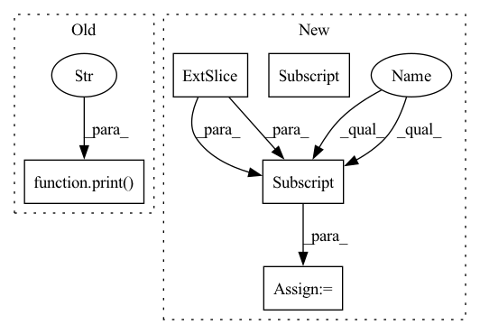

Pattern ID :24434
Before Change
sr_image_path = os.path.join(config.sr_dir, file_names[index])
hr_image_path = os.path.join(config.hr_dir, file_names[index])
print(f"Processing `{os.path.abspath(hr_image_path)}`..." )
// Make high-resolution image
hr_image = cv2.imread(hr_image_path).astype(np.float32) / 255.0
hr_image_height, hr_image_width = hr_image.shape[:2]
hr_image_height_remainder = hr_image_height % 12After Change
lr_image_height, lr_image_width = lr_image.shape[:2]
lr_image_height_remainder = lr_image_height % config.upscale_factor
lr_image_width_remainder = lr_image_width % config.upscale_factor
lr_image = lr_image[:lr_image_height - lr_image_height_remainder, :lr_image_width - lr_image_width_remainder, ...]
lr_image = imgproc.imresize(lr_image, 1 / config.upscale_factor)
lr_image = imgproc.imresize(lr_image, config.upscale_factor)
// Make high-resolution imageIn pattern: SUPERPATTERN
Frequency: 4
Non-data size: 5
Instances Fragment ID: 75899254
Project Name: lornatang/srcnn-pytorch
Commit Name: 919c5e6f1c9d9f4b355873199e155b50b2f04104
Time: 2022-03-17
Author: liuchangyu1111@gmail.com
File Name: validate.py
M Class Name: AnonimousClass
N Class Name: AnonimousClass
M Method Name: main(0)
N Method Name: main(0)
M Parent Class:
N Parent Class:
M File Name: validate.py
N File Name: validate.py
M Start Line: 29
M End Line: 70
N Start Line: 51
N End Line: 75
Before Change
def main() -> None:
// Initialize the super-resolution model
print("Build SRCNN model..." )
model = SRCNN().to(config.device)
print("Build SRCNN model successfully.")
// Load the super-resolution model weightsAfter Change
print(f"Processing `{os.path.abspath(lr_image_path)}`...")
// Make low-resolution image
lr_image = cv2.imread(lr_image_path).astype(np.float32) / 255.0
lr_image_height, lr_image_width = lr_image.shape[:2]
lr_image_height_remainder = lr_image_height % config.upscale_factor
lr_image_width_remainder = lr_image_width % config.upscale_factor
lr_image = lr_image[:lr_image_height - lr_image_height_remainder, :lr_image_width - lr_image_width_remainder, ...]
lr_image = imgproc.imresize(lr_image, 1 / config.upscale_factor)
lr_image = imgproc.imresize(lr_image, config.upscale_factor)
// Make high-resolution image Fragment ID: 75899252
Project Name: lornatang/srcnn-pytorch
Commit Name: 919c5e6f1c9d9f4b355873199e155b50b2f04104
Time: 2022-03-17
Author: liuchangyu1111@gmail.com
File Name: validate.py
M Class Name: AnonimousClass
N Class Name: AnonimousClass
M Method Name: main(0)
N Method Name: main(0)
M Parent Class:
N Parent Class:
M File Name: validate.py
N File Name: validate.py
M Start Line: 29
M End Line: 70
N Start Line: 51
N End Line: 75
Before Change
def sweep_n(ntensor, niter, dtype):
print("n, dtype, ntensor, gflop, runtime, tflop/s" )
for n in [16, 32, 64, 128, 256, 512, 1024, 2048, 4096]:
nt_a = torch.nested_tensor(
[torch.randn(n, n).to(dtype).cuda() for t in range(ntensor)]
)After Change
device="cuda",
)
runtime = bench(nt_a, nt_b, niter)
nt_a_size = torch.ops.aten._nested_tensor_size(nt_a)
lengths = nt_a_size[:, 1]
print(",".join(map(str, [ntensor, dtype, lengths.min().item(),
lengths.float().mean().item(), lengths.max().item(), runtime])))
Fragment ID: 75899250
Project Name: pytorch/pytorch
Commit Name: 943b20e7ae290d8e71f877eb700f197a9df56cbe
Time: 2022-11-02
Author: cpuhrsch@fb.com
File Name: benchmarks/nested/nested_bmm_bench.py
M Class Name: AnonimousClass
N Class Name: AnonimousClass
M Method Name: sweep_n(2)
N Method Name: sweep_n(3)
M Parent Class:
N Parent Class:
M File Name: benchmarks/nested/nested_bmm_bench.py
N File Name: benchmarks/nested/nested_bmm_bench.py
M Start Line: 22
M End Line: 33
N Start Line: 24
N End Line: 40
Before Change
img = cv2.resize(img, (32,32))
img = np.moveaxis(img, -1, 0)
img = img.astype("float32") / 255.0 - 0.5 // normalized and centered
print(f"DEBUG: Env: captured speed:{speed}" )
speed = speed / 1000.0 // normalized, but not centered
self.img = img // for render()
return img, speed
After Change
apply_control(actions) // TODO: format this
def grab_img_and_speed(self):
img = np.asarray(self.sct.grab(self.monitor))[:,:,:3]
speed = np.array([get_speed(img, self.digits), ], dtype="float32")
img = img[100:-150, :]
img = cv2.resize(img, (50, 190))
img = np.moveaxis(img, -1, 0)
img = img.astype("float32") / 255.0 - 0.5 // normalized and centered
//print(f"DEBUG: Env: captured speed:{speed}") Fragment ID: 75899251
Project Name: trackmania-rl/tmrl
Commit Name: c4118d9f35c2c541c79fe5817adea1e060452fe1
Time: 2020-08-01
Author: edouard.geze@hotmail.fr
File Name: gym-tmrl/gym_tmrl/envs/tmrl_env.py
M Class Name: TMInterface
N Class Name: TMInterface
M Method Name: grab_img_and_speed(1)
N Method Name: grab_img_and_speed(1)
M Parent Class:
N Parent Class:
M File Name: gym-tmrl/gym_tmrl/envs/tmrl_env.py
N File Name: gym-tmrl/gym_tmrl/envs/tmrl_env.py
M Start Line: 62
M End Line: 62
N Start Line: 57
N End Line: 59
Before Change
imgs = [imread(file)[..., :3] / 255.0 for file in img_files]
imgs = np.stack(imgs, axis=-1)
print("Loaded camera poses, scene bounds, and image data." )
return imgs, poses, z_bounds
def imread(img_file: str) -> np.ndarray:After Change
// load the camera parameters and scene z-bounds
poses_raw = np.load(os.path.join(base_dir, "poses_bounds.npy"))
camera_params = (
poses_raw[:, :-2].reshape([-1, 3, 5]).transpose([1, 2, 0])
) // (N, 15) -> (3, 5, N)
z_bounds = poses_raw[:, -2:].transpose([1, 0]) // (N, 2) -> (2, N)
// parse extrinsics and intrinsics
extrinsics = camera_params[:, :-1, :] // (3, 4, N)
intrinsics = camera_params[:, -1, :] // (3, N)
img0 = [ Fragment ID: 75899248
Project Name: dvelopery0115/torch-nerf
Commit Name: 7880d3f3120e36d298df8cde8c346a8cf69a974b
Time: 2022-06-30
Author: dreamy1534@kaist.ac.kr
File Name: torch_nerf/src/utils/data/load_llff.py
M Class Name: AnonimousClass
N Class Name: AnonimousClass
M Method Name: _load_data(4)
N Method Name: _load_data(4)
M Parent Class:
N Parent Class:
M File Name: torch_nerf/src/utils/data/load_llff.py
N File Name: torch_nerf/src/utils/data/load_llff.py
M Start Line: 69
M End Line: 140
N Start Line: 69
N End Line: 170